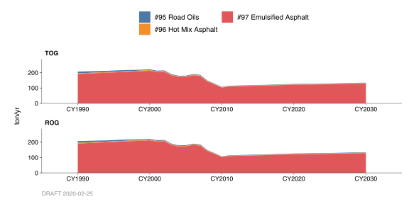
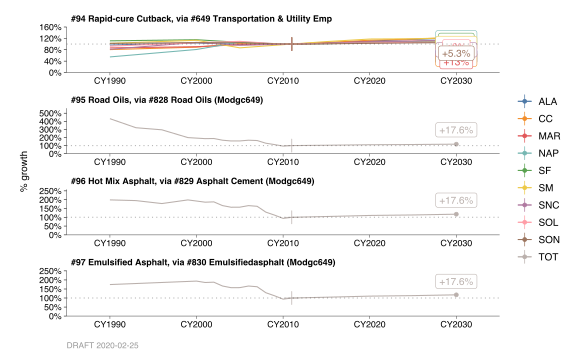
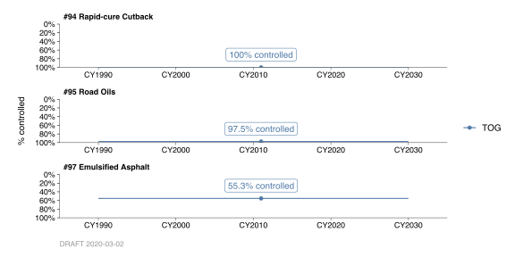

6.17 Asphalt Paving
6.17.1 Emissions
Introduction
Road Oils (Slow-cure Liquid Asphalt), Hot Mix Asphalt, and Emulsified Asphalt, Categories 95 – 97, respectively, account for the organic emissions from asphalt paving materials during and after the paving of roads, streets, and parking lots in the Bay Area.
Rapid-cure Liquid Asphalt (Rapid-cure Cutback Asphalt) is no longer used in the Bay Area. Rapid-cure Liquid Asphalt was formerly Category 94.
Medium-cure Liquid Asphalt (Medium-cure Cutback Asphalt) may be used in the Bay Area provided the atmospheric temperature does not exceed 500F for 24 hours after application (per BAAQMD Regulation 8-15, Sections 302 and 112.) This restriction greatly limits the application of this type asphalt; therefore, the organic emissions from Medium-cure Liquid Asphalt are considered negligible.
Slow-cure Liquid Asphalt (Slow-cure Cutback Asphalt) may also be used in the Bay Area with restrictions (per BAAQMD Regulation 8-15, Section 304). Slow-cure Liquid Asphalt is synonymous with “Road Oils” (Category 95).
Methodology
The organic emission from asphalt paving operations in the Bay Area was based on ARB’s methodology for emission calculations (Attachment C: Asphalt Paving and Roofing, from STI’s Area Source Emissions Updates, March 2003). In 2011, the Energy Information Administration (EIA) Office of Oil and Gas reported 10,589,000 barrels of asphalt were used in California for paving and roofing purposes. Of that amount, it was assumed 80% (8,471,200 barrels) of the asphalt was used for road paving and 20% (2,117,800 barrels) was used for roofing. (To calculate asphalt usage in tons per year it was assumed an asphalt density of 8 lbs/gal and a barrel equivalent to 42 gals.) Additionally, the statewide asphalt use for paving applications was estimated as follows:
- Hot-mix: 88%
- Emulsified: 9%
- Road Oils: 2%
- Cutback: <1%
(Note: It is assumed some districts, including the BAAQMD, do not use Rapid-cure Cutback Asphalt.) County throughputs can be apportioned from the state’s total using the miles of paved roads in each of the counties. This data was acquired from the States’ Teale Data Center. The organic emission factors used for hot-mix, emulsified, and road oils were 0.04, 17.9, and 2.19 lb/ton of asphalt applied, respectively. (Note—the initial emission factor used for road oils was 88 lbs./ton. This was an EPA recommended value; however, regulatory controls reduced this value to the level stated above.) The total emissions for area source categories are determined by multiplying the emission factor, throughput, and rule effectiveness factor, if applicable.
Monthly Variation
Monthly variation of emissions is based on estimates of construction activities in a year.
County Distribution
County activity was based on miles of paved roads in each county as acquired from the Teale Data Center.
6.17.2 Trends
History

Since the early 1980’s, the Asphalt Institute has done the reporting of asphalt sales and road oils. The historical growth profile was based on a combination of prior emissions calculations and the Association of Bay Area Government’s (ABAG’s) 2009 Transportation and Utility Employment growth profile.
Growth

Future projections of emissions to 2030 are also based on ABAG’s 2009 Transportation, Communication, and Utility Employment growth profile.
Control

Due to Regulation 8-15, there is no longer any usage of Rapid-cure Cutback Asphalt in the Bay Area by 1982. The emissions from Slow-cure Liquid asphalt (Road Oils) category were reduced by approximately 75% in 1988 and 97.5% in 1989. Similarly, emissions from using emulsified asphalt were reduced by 49% in 1988 and 55.3% in 1989.
By: Stuart Schultz Date: January 2014 Base Year 2011